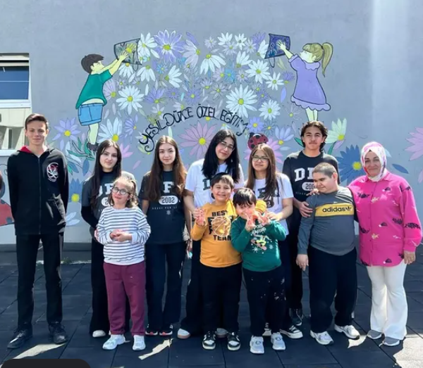
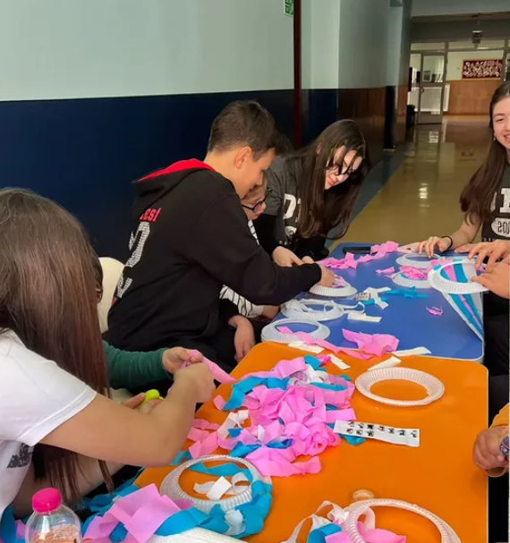

Ein offenes Impact-Dashboard, das Hypiums STEM-Reichweite und soziale Projekte mit überprüfbaren Daten dokumentiert.
Diese Seite dokumentiert Hypiums STEM-Reichweite, Schulungen und gesellschaftliche Aktivitäten an einem Ort. Die Zähler werden nur anhand bestätigter Aktivitäten aktualisiert.
Bestätigte Teilnehmendenzahl
Abgeschlossene Aktivitäten
Gesamte aktive Schulungszeit
Direkt erreichte Institutionen
Freiwillig beteiligte Schüler
Zielgruppe und gewünschtes STEM-Ergebnis festlegen.
Workshop, Präsentation, Mentoring oder soziale Aktivität durchführen.
Teilnahme, Dauer und Reichweite dokumentieren.
Den Eintrag mit Fotos, Dokumenten und Zusammenfassung belegen.
Feedback in die nächste Aktivität einfließen lassen.
Mit 10 Schülern führten wir Mal- und Kreativaktivitäten durch, die gemeinsames Gestalten, Kommunikation und soziale Teilhabe förderten.


Für 40 Viertklässler zum Schulabschluss bereiteten wir Geschenke vor, um ihren Abschluss zu feiern und das Ende des Schuljahres besonderer und unvergesslicher zu machen.